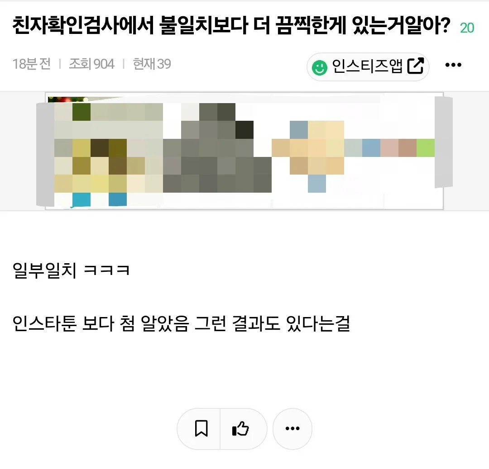

일부일치 =
내 배우자가 내 가족이랑 불륜한것

일부일치 =
내 배우자가 내 가족이랑 불륜한것
부모님도 없다면?
와 할배 개쩌네 이건 인정이지 노하우 얻고 퉁쳐야지 어쩌겠어
외동
그 어디서 본건디 쌍둥이가 한쪽에 흡수돼서 고환은 형제꺼였던 썰
어 기억난다 ㅋㅋㅋㅋ
이로써 혈통은 이어진다
생식기만 쌍둥이형이라던 썰 생각나네
하프자식 ㄷㄷ
사실 배우자가 잃어버린 누나나 동생이면 어케 나옴?
사랑은 돌아 오는 거야 ~
천생연분
바람핀 누나 동생 되는거지
뭔소리임 일부일치가?
너는 아닌데 너랑 비슷한 유전자 가진 사람의 애이라고
아 형이랑 했다고..
형만 해당하는게 아니고
위로. 위의 옆으로도 해당할수있음
아님 아빠임
그보다 더 끔찍한 결과는 0.00000일치
외계 생명체 ㄷㄷ
규소기반생명체
이거도 잘못 알려진 사실 중 하나. 99.9 아니면 0으로 나오는게 정상이라고 함
100% 일치.
우리나라 아직 일부일치제임
먼가꼴림
내 몸에 있는 부랄이 내 부랄이 아니라 엄마 뱃속에서 흡수된 형의 부랄인 경우 있었잖아ㅋㅋ
친자검사 요약
1. 판정은 두 가지뿐입니다. 친자 관계 인정(99.9% 이상) 아니면 배제(0%)이고, "일부 일치"라는 판정은 없어요.
2. 애매하면 판정을 보류합니다. 1~2군데가 어긋나는 건 돌연변이일 수 있어서, 위치를 늘리거나 어머니 시료를 더해 다시 검사합니다. 그러면 결국 인정이나 배제로 결론이 나요.
3. "형제의 자식" 썰은 과장입니다. 삼촌은 DNA가 일부 겹치지만, 요즘 검사에서는 대부분 확실하게 배제돼요. 결과지에 형제의 아이라고 나오지도 않습니다.
4. 예외는 일란성 쌍둥이뿐입니다. DNA가 사실상 같아서 일반 검사로는 둘 중 누가 아버지인지 구분하지 못해요.
5. "DNA 몇 % 공유"는 다른 서비스 얘기입니다. 조상 찾기 같은 유전자 서비스에서 나오는 표현이고, 친자 판정과는 관계없어요.
결론: "일부 일치 판정"이라는 썰은 판정 보류를 잘못 말했거나 지어낸 이야기일 가능성이 높아요.
--------------------------
잼있는 썰이구만
하도 자꾸 올라와서 진짜인가 싶어서 물어봄
이게맞음 원글은 애초 친자확인 유전자 검사를 어떻게 하는지도 모르는 사람이 쓴거

여기서 더 끔찍해지려면
형제없는 일부 일치라면?